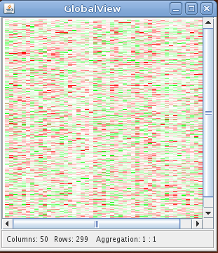

User Manual
Introduction
All data sets are assumed to be available in a preprocessed, normalized and tab delimited ascii form. For more details see the Data section or the example files available in the Download and Installation section.
Data manager
By starting the Seurat.jar file the data manager window will appear:

The data manager displays the different datasets loaded. Detailed information about the files and the information stored can be accessed by clicking on the names of the respective data sets. In addition the manager window shows the objects described by the different data sets. These objects are e.g. genes, samples, CGH clones and chromosomes. Again, detailed information about the objects can be accessed by clicking on the names. At top of the data manager window is the main panel from which most of the functions can be accessed:
- File
- open/close different data files
- save data files
- exit Seurat
- Plots
- open heatmap plots for gene expression and array CGH data
- open the chromosome map
- perform clustering and seriation algorithms
- open the confusion matrix to compare clustering results
- Options
- change the pixel settings of the heatmaps
- change the color settings of the heatmaps
- Window
- list of all opened windows
- close all windows
- Help
- opens this website
Interactive genexpression heatmap
An interactive heatmap showing the gene expression data can be called frome the main panel by:
Plots -> Heatmap Genexpressions

The heatmap plot displays the gene expression data with the gene expression levels represented by colors.
Pixel and color preferences of all heatmaps can be changed under:Plots -> Pixel Settings
Plots -> Color Settings

Clustering and seriation algorithms
A clustering of the gene expression data can be performed by:
Plots -> Clustering
Seurat provides agglomerative hierarchical clustering and kmeans clustering. In order to perform a kmeans clustering, the user has to choose this from the available methods and provide the number of desired sample and gene clusters. Otherwise seurat will perform hierarchical clustering. For both algorithms different types of distance measures can be chosen, e.g. euclidean, manhattan, pearson etc.. To perform hierarchical clustering several linkage functions are available, e.g. single, complete, ward etc.. Distance measure and linkage function for clustering genes and samples can be chosen independently. The results of hierarchical clustering are visualized by an reordered heatmap together with the resulting dendrograms. If the user provides the number of desired gene and sample clusters and chooses a hierarchical clustering method, the dendrogram will be cut according to the number of clusters. In this case, the dendrograms will not be visualized.

Plots -> Seriation
More information about the implemented seriation algorithms can be found here.
Exploring gene annotaions and clinical data
Clinical data can be accessed via the data manager window. Seurat automatically recognizes the type of the different variables. Continous variables are visualized by a histograms and catgeorical vatiables by bar plots. Information about functional groups, e.g. Gene Ontology, KEGG, user defined groups are visualized by bar plots.

Chromosome map
If array CGH data is available, seurat provides a chromosome map which diplays the relative frequencies of genetical gains and losses as histograms along the chromosomes. This window is available under:
Plots -> Chromosome View